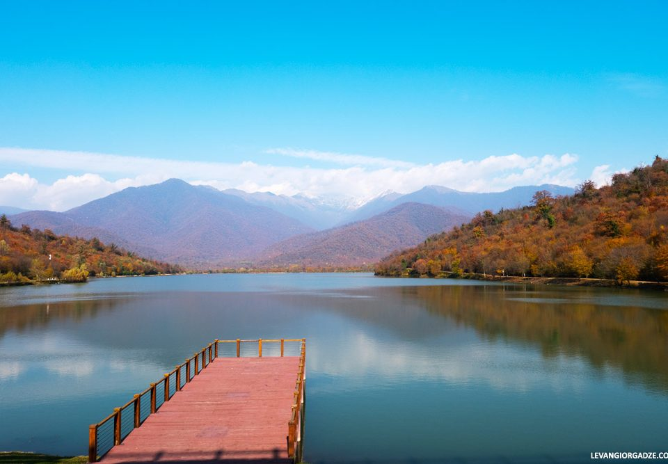
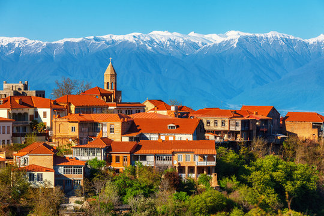

Kakheti (Georgian: კახეთი K’akheti; [kʼɑχɛtʰi]) is a region (mkhare) formed in the 1990s in eastern Georgia from the historical province of Kakheti and the small, mountainous province of Tusheti. Telavi is its capital. The region comprises eight administrative districts: Telavi, Gurjaani, Qvareli, Sagarejo, Dedoplistsqaro, Signagi, Lagodekhi and Akhmeta. Kakheti is bordered by the Russian Federation with the adjacent subdivisions (Chechnya to the north, and Dagestan to the northeast), the country of Azerbaijan to the southeast, and with the regions of Mtskheta-Mtianeti and Kvemo Kartli to the west. Kakheti has a strong linguistic and cultural identity, since its ethnographic subgroup of Kakhetians speak the Kakhetian dialect of Georgian.
The Kakheti Wine Region is located in the eastern part of Georgia and comprises two river basins, Iori and Alazani. These rivers have a significant influence on the character of Kakhetian wines. Kakheti is bordered on the west by another very important wine region of Georgia - Kartli. Together with the location, the climatic conditions of the region play an essential role in the formation of Kakheti wines. Kakheti vineyards are cultivated at an altitude of 250-800 meters above sea level. We can find both humid subtropicals as well as continental climates in the region. Kakheti terroir provides ideal conditions for both local varieties and international wine varieties as well. When talking about the Kakheti wine region, the first thing that comes to mind is Rkatsiteli and Saperavi grapes. These two wine varieties have become the face of the region and Georgia. With the increase in the awareness of Georgian wine, the interest in these varieties is growing, so do not be surprised if you encounter these Kakhetian wine varieties in different wine regions in the world.
